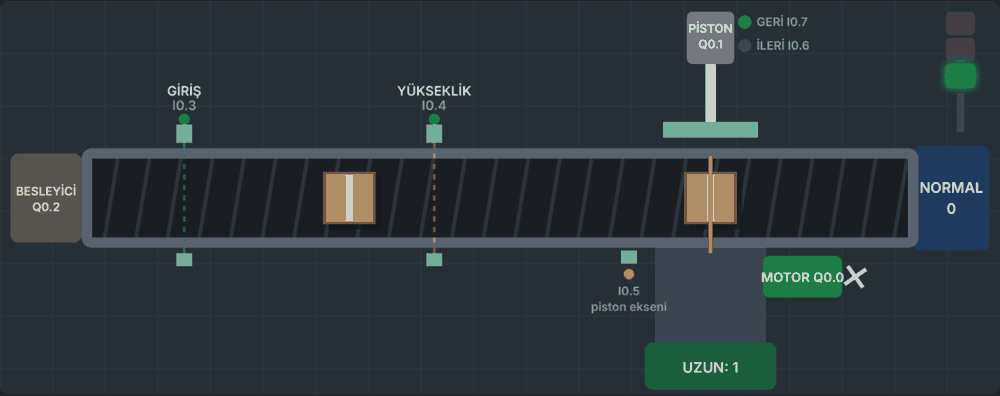

Ladder'ı tarayıcıda yaz, konveyör hattı senin programınla çalışsın. Kurulum yok, lisans yok. Her yazıda sahadan bir problem, adım adım çözümü ve deneyebileceğin hazır program var.
İlk yazıdan başla Simülatörü aç
NO/NC farkı, STOP neden NC bağlanır, bobin kendini nasıl tutar.
Yazı 2 · 3D simülasyonKendi ladder'ım. 3D simülasyon ve canlı ladder yan yana, yavaş çekimle.
Besleyici neden darbe ister, kutular arası mesafe nasıl ayarlanır.
Limit sensörleri, P/N kenar, bandı durdur-it-başlat.
Her 5 kutuda bir dur, RESET ile devam et.
Hatta aynı anda birden fazla kutuyu takip etmek.
Ben Hasan Mirza Kılınç, elektrik-elektronik mühendisiyim. PLC öğrenirken programı yazıp çalıştıramamak beni çok uğraştırdı, simülasyon programları da ya ücretliydi ya da kurulumu ağırdı. Bu yüzden tarayıcıda çalışan bir simülatör yaptım, öğrendiklerimi de burada sırayla yazıyorum.